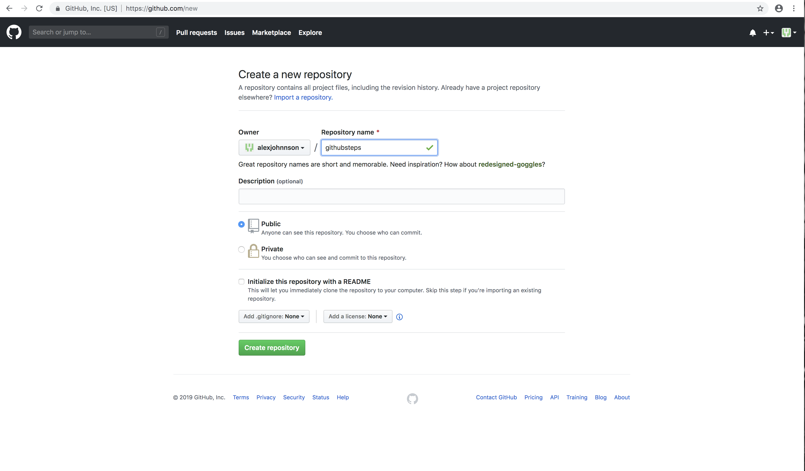
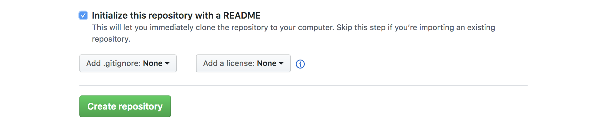
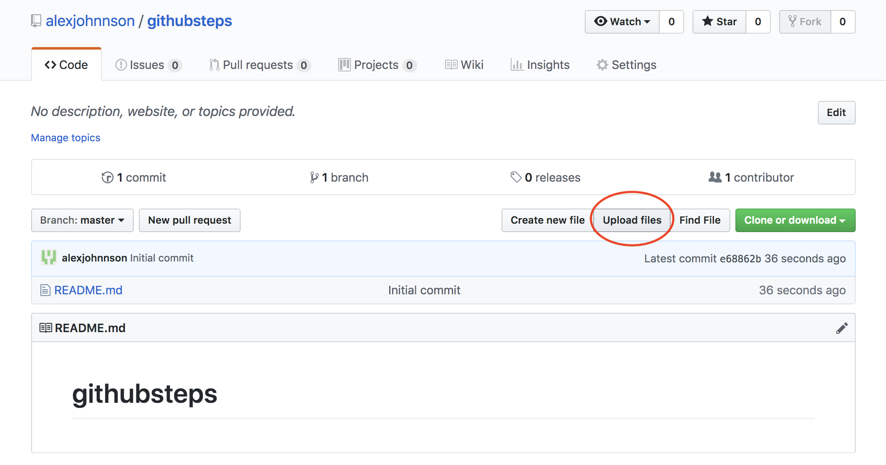
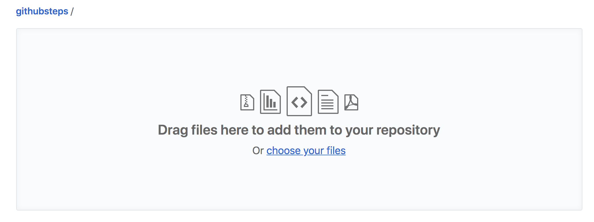
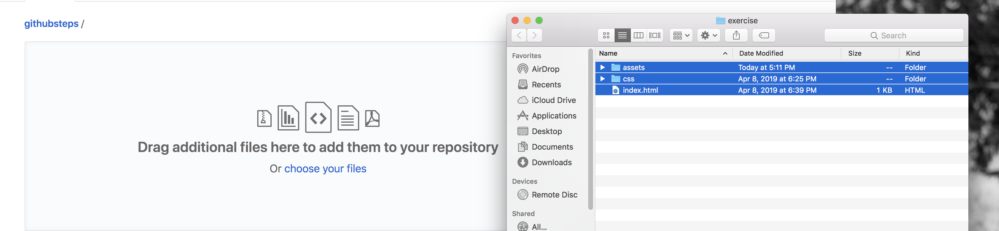
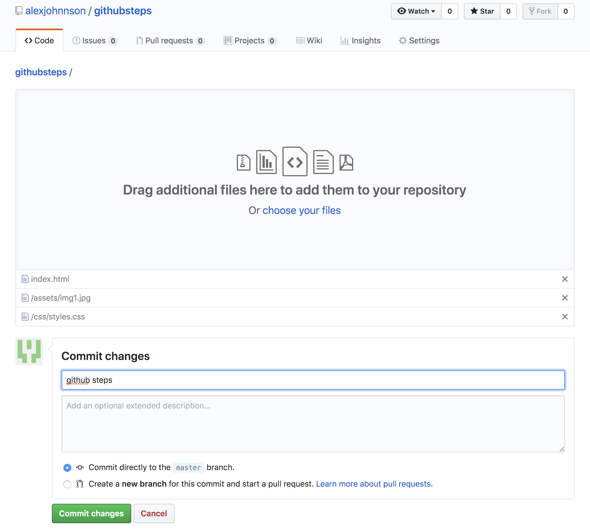
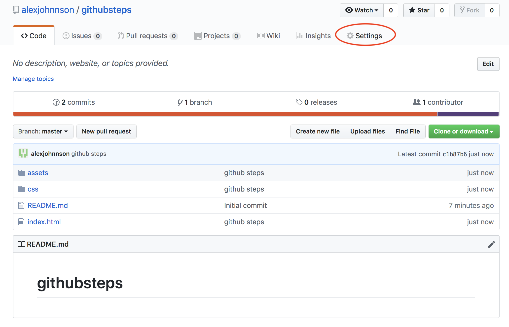
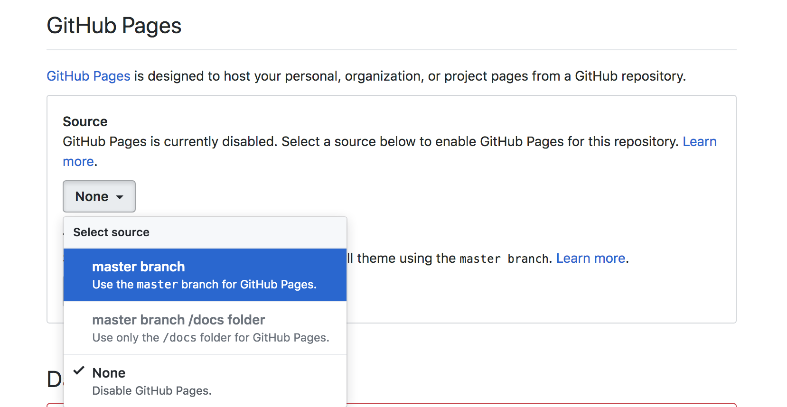
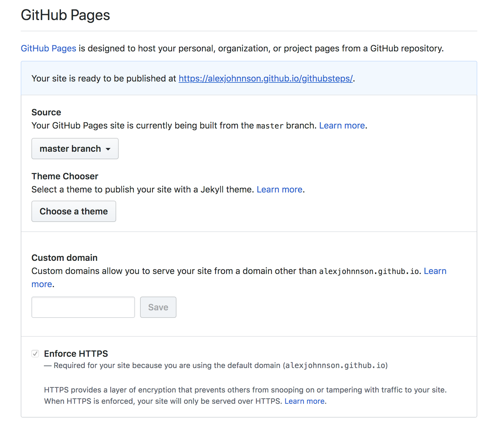

To begin, click the "+" in the upper right hand corner. In the drop down menu, select "New Repository".
Next, create a name for your repository. This should be the title/topic of your website.
Toward the bottom, select the box that says "Initialize this repository with a README". Then click the green button, "Create repository".
This is the page of your repository. You can edit it from here. To add your files, select "Upload files" which I circled in red.
In this box, you can drag or select your files and add them to your repository. Either drag your files or select "choose your files".
If you have more than one file, highlight them all (Command+A) and drag them into the box or hit "open".
Your files should now be listed below the drag and drop box. Add a title for your upload in the first textbox. I used the same title as my repository name. When you're finished, click the green button, "commit changes".
In the top right corner, navigate to settings which I circled in red.
Scroll down until you see "Github Pages". Under source there is a drop down box where "none" is selected. Change the setting so that the first option, "master branch" is selected.
The link to your website is now listed inside of the blue or green box. If it is blue, it means some items are still loading and you should wait a few minutes before the site is complete. If it is green, it means your site is ready to go.